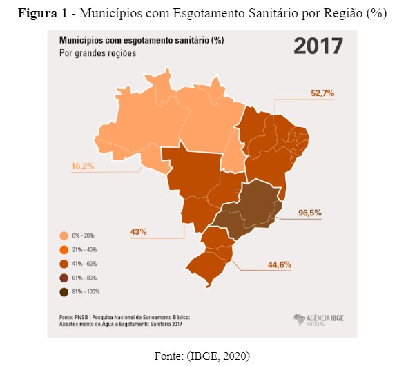

A universalização do acesso aos serviços de água e de esgoto é um objetivo legítimo das políticas públicas porque tem impactos importantes sobre a saúde, o ambiente e a cidadania. No Brasil, o déficit do setor de saneamento básico é elevado, sobretudo no que se refere às redes e aos tratamentos de esgotos, com maior carência nas áreas periféricas dos centros urbanos e nas zonas rurais, onde está concentrada a maior parte da população de classe média a baixa. Tendo posto, será analisada ao decorrer deste, alguns parâmetros e informações acerca das estações de tratamento de esgoto no Brasil. É interessante economicamente e sustentavelmente pensar-se em métodos alternativos que serão apresentados neste escrito. Se faz de extrema importância entender que o conceito de sustentabilidade, ao ser aplicado, é oneroso e, por vezes, inviável economicamente falando. Tal proposição se mostra real observa-se que dentre os Objetivos de Desenvolvimento Sustentável (ODS) o objetivo 8 titulado “Empregos Dignos e Crescimento Econômico” conflita diretamente a outros, por exemplo, o 13 - “Combate às mudanças climáticas”, 6 - “Água Limpa e Saneamento”, 15 - “Vida na terra”, entre outros.
Palavras chaves: Análise; Tratamento de Esgoto; Custos do Tratamento no Brasil; Métodos Alternativos.
No Brasil, o setor de saneamento básico - principalmente no quesito tratamento de esgoto - possui um grande déficit, o que acarreta vários problemas na saúde da população e ambiental, sendo as áreas periféricas de grandes metrópoles e as zonas rurais os locais mais prejudicados. De acordo com (SNIS, 2020a), no ano de 2010 37,8% do esgoto coletado foi devidamente tratado. Em contrapartida, no ano de 2020 apenas 50,8%, representando assim um aumento de apenas 13%. Em paralelo, apenas 55% da população tinha atendimento com rede de esgoto em 2020. “As estatísticas sobre coleta e tratamento de urbano no Brasil ainda revelam um quadro bastante precário, mesmo que melhorias graduais venham sendo registradas” (BARONY, 2011).
Uma prova de que disponibilizar uma infraestrutura melhor para serviços essenciais torna-os universais, é a disponibilidade de energia hoje em dia. Devido a grande demanda dela em diversas áreas (como na de telecomunicações), foram necessários diversos projetos para distribuí-la, e agora é possível defini-la praticamente como universal. Em setores onde problemas institucionais foram resolvidos são demonstrados nitidamente próximos do acesso universal. Esse é o caso de serviços como energia e telefonia. (GALVÃO JUNIOR, 2009)
Entende-se que tal serviço na sociedade é de extremo benefício. Questiona-se, portanto, o motivo do, assim como em outros serviços, setor tratamento de efluente ainda ser tão precário. Seria escassez orçamentária? Ou simples falta de interesse? “São as questões institucionais do setor, notadamente os mecanismos de políticas públicas, a titularidade e a regulação dos serviços, as que mais dificultam a ampliação dos índices de cobertura, inibindo investimentos em expansão e reposição da infraestrutura sanitária.”(GALVÃO JUNIOR, 2009)
Um fator muito importante, além do interesse popular, é a conscientização da população. Deve-se considerar que tal fator pode se desestimular graças a péssima educação, principalmente pública, que é evidenciada quando analisado o fato do IDEB (Índice de Desenvolvimento da Educação Básica) do Ensino Médio no Brasil no ano de 2019 atingir, apenas, 4,2 pontos, média tal que é impulsionada pela iniciativa privada. (IDEB, 2019)
A inibição de informações básicas sobre o tratamento correto de afluentes, efluentes e também o descarte devido de resíduos sólidos causam um grande agravamento da precariedade do saneamento rural. Por isso, um estudo e mapeamento relacionado para uma educação ambiental visando a melhora das condições de saneamento do país, para que os problemas decorrentes da falta de saneamento sejam controlados, é uma boa saída para a aprimorar a condição de vida da população. (SILVA; MAREJON; LESS, 2014)
Tendo posto, será analisada ao decorrer deste, alguns parâmetros e informações acerca das estações de tratamento de esgoto no Brasil. É interessante economicamente e sustentavelmente pensar-se em métodos alternativos. Neste escrito, apresentaremos alguns métodos e sua aplicabilidade, na prática. Se faz de extrema importância entender que o conceito de sustentabilidade, ao ser aplicado, é oneroso e, por vezes, inviável economicamente falando. Tal proposição se mostra real quando observa-se que dentre os Objetivos de Desenvolvimento Sustentável (ODS) o objetivo 8 titulado “Empregos Dignos e Crescimento Econômico” conflita diretamente a outros, por exemplo, as metas 13 - “Combate às mudanças climáticas”, 6 - “Água Limpa e Saneamento”, 15 - “Vida na terra”, entre outras.
Apesar de os serviços de água e esgoto estarem disponíveis em diversas áreas, é possível perceber que esses serviços ainda assim não estão universalizados. Nos últimos anos, estratégias criadas por políticas públicas tem viabilizado uma infraestrutura melhor para esses serviços chegarem a toda população, mas adversidades como a qualidade ruim na entrega desses serviços tornam necessários novos recursos financeiros e fundos para que esses sistemas essenciais se tornem completamente universais. (GALVÃO JUNIOR, 2009) De acordo com (IBGE, 2020), quatro em cada dez municípios não têm serviço de esgoto no país. Apenas em 11 das 27 unidades da federação, mais da metade dos municípios possuíam rede coletora de esgoto. Abaixo na Figura 1 são apresentados dados dos municípios com esgotamento sanitário pelo país.
Mesmo que houvesse estações de tratamento em cada município brasileiro é necessário que a água que é disponibilizada pelas empresas seja de qualidade e apresente parâmetros satisfatórios definidos pelo Ministério da Saúde. Em um estudo realizado em 21 municípios nos quais as prefeituras são responsáveis por cuidar dos serviços públicos de saneamento básico, foram descobertos diversos problemas que afetam diretamente a qualidade desses serviços prestados - falta de funcionários capacitados e planejamento, pouco investimento, estrutura mal formulada - entre outros. Essa deficiência foi mais perceptível em sete municípios que não possuem entidades específicas para cuidar da prestação de serviços, uma vez que 85% desses locais não tratam a água, desrespeitando a obrigatoriedade de desinfecção da água proposta pela Portaria nº 2.914/2011 do Ministério da Saúde (Brasil, 2011). Além disso, em outros quatro municípios nos quais departamentos e secretarias são quem fornece esses serviços, também foram observadas diversas limitações em diferentes aspectos. (LIMA;SCALIZE, 2016)
Como vêm-se afirmando por este, o conceito de sustentabilidade, ao ser aplicado, é oneroso e, por vezes, inviável economicamente falando, por isso para entender o tratamento de esgoto no Brasil é importante analisar em conjunto os custos de tais tratamentos.
Para que a população tenha uma qualidade de vida melhor e, ao mesmo tempo, que esteja em harmonia com o meio ambiente, é necessário que a água disponibilizada seja de qualidade, que haja uma coleta e tratamento de esgoto organizados - de uma maneira justa, de acordo com o que é cobrado aos cidadãos - e principalmente, a satisfação dos mesmos. (ARRUDA;LIMA;SCALIZE, 2016)
A cobrança de água determinada pela chamada “Lei das Águas” tem como objetivo mostrar aos cidadãos o verdadeiro valor da água em nossa sociedade e assim incentivá-los a racionalizar o uso dela, além da utilização desses recursos financeiros para recuperar diversas bacias hidrográficas espalhadas pelo país. (FUSATI, 2020)
Além do Brasil, diversos outros países cobram pelos serviços de água, como o Reino Unido, que é regido pelo The Water Services Regulation Authority (OFWAT). Por lá, de cinco em cinco anos são estudados reajustes a serem realizados nessa cobrança de acordo com o tamanho da população atendida e a qualidade necessária para atender a demanda da água. (ARRUDA;LIMA;SCALIZE, 2016)
A tabela 1 apresenta os custo em R$/m³ do tratamento de esgoto por região brasileira.
Segundo o estudo Contas Econômicas Ambientais da Água (CEAA): Brasil 2013-2017, quanto ao consumo de água por habitante observa-se o seguinte: O Sudeste apresenta o maior consumo de água per capita por dia (143 litros/habitante/dia), dentre as 5 regiões brasileiras. Logo em seguida aparecem as regiões Sul e Centro-Oeste com 121 litros/h/d e 114 litros/h/d, respectivamente. Enquanto isso, o Norte e o Nordeste apresentam um consumo diário por cidadão de 84 e 83 litros/dia, respectivamente. (FUSATI, 2020)
Os dados pertencentes ao passado e também os que retratam o presente são fundamentais para a construção de uma prospecção do futuro. Desde a década de 1980 esse ideal tem crescido e ganhado força a partir de mudanças de cunho político, tecnológico e econômico ao redor do planeta. (SILVA; MAREJON; LESS, 2014) O esgoto misto é o termo que define a não separação das águas cinzas em meio às águas negras; ele, mesmo não causando transformações em instalações hidráulicas de esgoto, demanda mais tempo, espaço e dinheiro. (FAGUNDES;SCHERER, 2009)
Os sistemas não hídricos englobam os diferentes tipos de banheiros secos (termofílicos), conhecidos popularmente como banheiros químicos ou privadas secas, que são três: o sistema com recipientes móveis, o sistema carrossel, e os sistemas com duas câmaras. (FAGUNDES;SCHERER, 2009)
No sistema com recipientes móveis, o recolhimento das excretas ocorre em um pequeno túnel, em uma estrutura sobre a qual está o assento sanitário. Sempre que o sanitário é utilizado as excretas são cobertas por cinzas, terra, serragem ou outros tipo de material compatível. Quando o recipiente está cheio, é substituído por outro e as excretas, logo, são depositadas em um local adequado para completar o processo de compostagem e posteriormente o material será reutilizado como adubo, por exemplo (FAGUNDES;SCHERER, 2009).
Em um sistema de uso contínuo utiliza-se um recipiente compartimentado que por sua vez denomina-se de sistema carrossel. À medida que se enchem tais compartimentos o recipiente é girado - como um carrossel, por isso essa denominação - para posicionar um outro compartimento vazio sobre o sanitário. Após o período necessário para a compostagem os recipientes são esvaziados. (FAGUNDES;SCHERER, 2009)
No sistema que utiliza-se duas câmaras, elas podem estar localizadas tanto abaixo quanto acima do nível do solo para que as excretas desçam sobre uma rampa metálica até uma câmara, utilizando-as alternadamente. As excretas devem ser cobertas por terra, cinza, serragem ou qualquer outro material adequado, assim como no sistema de recipientes móveis. Durante o tempo em que uma câmara encontra-se em uso, a outra recebe uma espécie de tampão para que então ocorra a compostagem do material. (FAGUNDES;SCHERER, 2009)
Dentre os sistemas hídricos de tratamento de águas sórdidas está o combinado com tanque séptico, ou fossa séptica, como uma estrutura de fluxo horizontal em que predomina o processo de sedimentação, ocorrendo também uma compreensão anaeróbica dos sólidos orgânicos O esgoto proveniente dos sanitários, após passar pelo tanque séptico pode receber outros tipos de tratamentos, dentre os quais: valas de filtração ou filtro de areia, filtro anaeróbio. ou poderá ser encaminhado diretamente para uma disposição final, em sumidouros, valas de infiltração ou círculo de bananeiras. A facilidade de execução e manutenção e a independência das condições climáticas são vantagens desse tipo de tratamento, entretanto requer terrenos permeáveis para diminuição da área necessária à infiltração, além de distância do lençol freático. (FAGUNDES;SCHERER, 2009)
Já os sumidouros são setores de purificação e disposição final do efluente de forma verticalizada. O emprego desse sistema é inadequado para solos arenosos ou muito impermeáveis, pois se configuram como poços secos escavados no chão, não impermeabilizados, para permitir a infiltração da água no solo [...]. As paredes dos sumidouros podem ser de alvenaria, de tijolos gradeados ou de concreto oportunamente perfurado. (FAGUNDES;SCHERER, 2009)
Nas valas de infiltração, o tratamento do esgoto consiste na filtragem do efluente no solo e, consequentemente, depuração em função dos processos físicos (retenção de sólidos) e bioquímicos (oxidação). Da mesma forma que ocorre com os sumidouros, o bom desempenho do sistema depende das características apresentadas pelo solo. É necessário e imprescindível a presença de tubos de drenagem e o comprimento das valas não deve exceder 30m. (FAGUNDES;SCHERER, 2009)
A depuração ocorre de maneira semelhante ao sistema de valas de filtração, por meio físico (retenção de sólidos) e bioquímico (oxidação), em virtude dos micro-organismos presentes nos grãos de areia. Tal sistema deve ser formado por no mínimo duas valas com canalizações superpostas que são separadas por uma camada de areia. A tubulação de drenagem, localizada na parte inferior da vala, deve estar envolta da brita. (FAGUNDES;SCHERER, 2009)
O sistema de tanque séptico com círculo de bananeiras consiste em despejar o efluente em um determinado poço contendo britas, além de estar coberto por solo do local rodeado de bananeiras (Figura 9), logo esse tipo de sistema é apresentado como um método alternativo, já que estas se adaptam bem a solos úmidos e ricos em matéria orgânica. As bananeiras se aproveitam dos nutrientes do efluente e absorvem grande parte da água, produzindo alimento e biomassa. Existe a possibilidade de empregar também líquidos e mamoeiros. (FAGUNDES;SCHERER, 2009)
Além deste, pode ser também observado outro método de sistema alternativo para tratamento de águas cinzas e mistas, conhecido denominado por tratamento de zona de raízes. Logo, o processo ocorre pela lavagem dos efluentes de um tanque biológico. Após ser realizado o pré tratamento com decantadores de gordura e tanque séptico, as águas então, são tratadas em um leito cultivado (tanque de zona de raízes ou wetland), passando por uma série de camadas filtrantes. (FAGUNDES;SCHERER, 2009)
ARRUDA, Poliana Nascimento. LIMA, Aline Souza Carvalho. SCALIZE, Paulo Sérgio. Gestão dos serviços públicos de água e esgoto operados por municípios em Goiás. Goiás-Brasil, 2016. Disponível em: Clique aqui para acessar a fonte. Acesso em: 02 out. 2022.
BARONY, Flávio José de Assis. Biossólidos: Produção, efeitos no crescimento de mudas de eucalipto e avaliação de risco à saúde humana. Viçosa, 2011. Disponível em: Clique aqui para acessar a fonte. Acesso em: 16 jul. 2022.
BRASIL. Ministério do Desenvolvimento Regional. Sistema Nacional de Informação sobre Saneamento. Diagnóstico dos serviços de Água e Esgoto - 2020. Brasília: SNIS, 2020a. Disponível em: Clique aqui para acessar a fonte Acesso em: 16 jul. 2022.
BRASIL, Nações Unidas. Como as Nações Unidas apoiam os Objetivos de Desenvolvimento Sustentável no Brasil. Brasil, 2022. Disponível em: Clique aqui para acessar a fonte. Acesso em: 16 jul. 2022.
FAGUNDES, Renata Magalhães. SCHERER, Minéia Johann. Sistemas Alternativos Para o Tratamento Local dos Efluentes Sanitários. Brasil, 2009. Disponível em: Clique aqui para acessar a fonte. Acesso em: 02 out. 2022.
FUSATI, Ambiental. O Custo da Água no Brasil. Brasil, 2020. Disponível em: Clique aqui para acessar a fonte. Acesso em: 02 out. 2022.
IBGE, Agência de Notícias. Quatro em cada dez municípios não têm serviço de esgoto no país. Brasil, 2020. Disponível em: Clique aqui para acessar a fonte. Acesso em: 02 out. 2022.
IDEB. Índice de desenvolvimento da educação básica. Brasília, 2019. Dados disponíveis em: Clique aqui para acessar a fonte. Acesso em: 3 set. 2022.
GALVÃO JUNIOR, Alceu Castro. Desafios para a universalização dos serviços de água e esgoto no Brasil. Ceará-Brasil, 2009. Disponível em: Clique aqui para acessar a fonte. Acesso em: 02 out. 2022.
SILVA, Diani Fernanda da. MOREJON, Camilo Freddy Mendoza. LESS, Felipe Ramon. Prospecção do panorama do saneamento rural e urbano no Brasil. FURG-RS, Brasil, 2014. Disponível em: Clique aqui para acessar a fonte. Acesso em: 02 out. 2022.